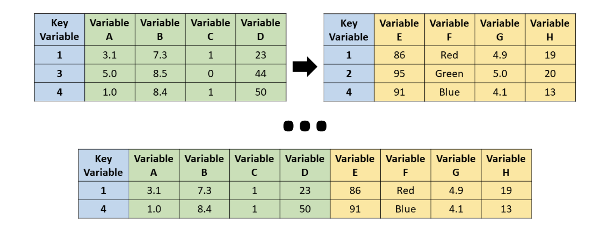
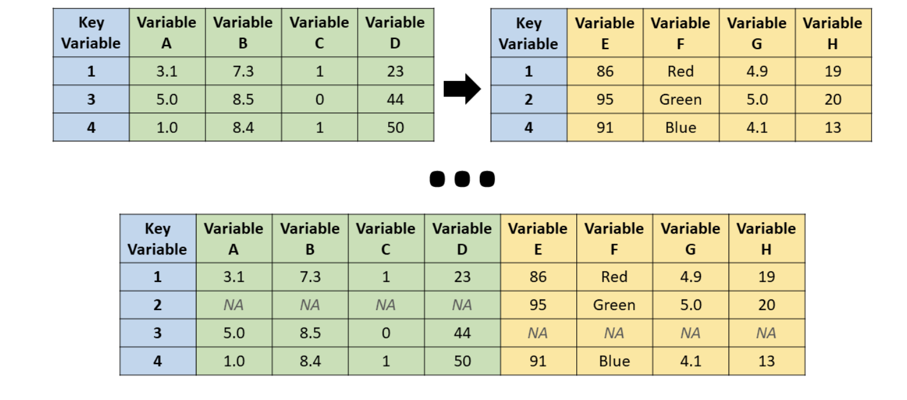
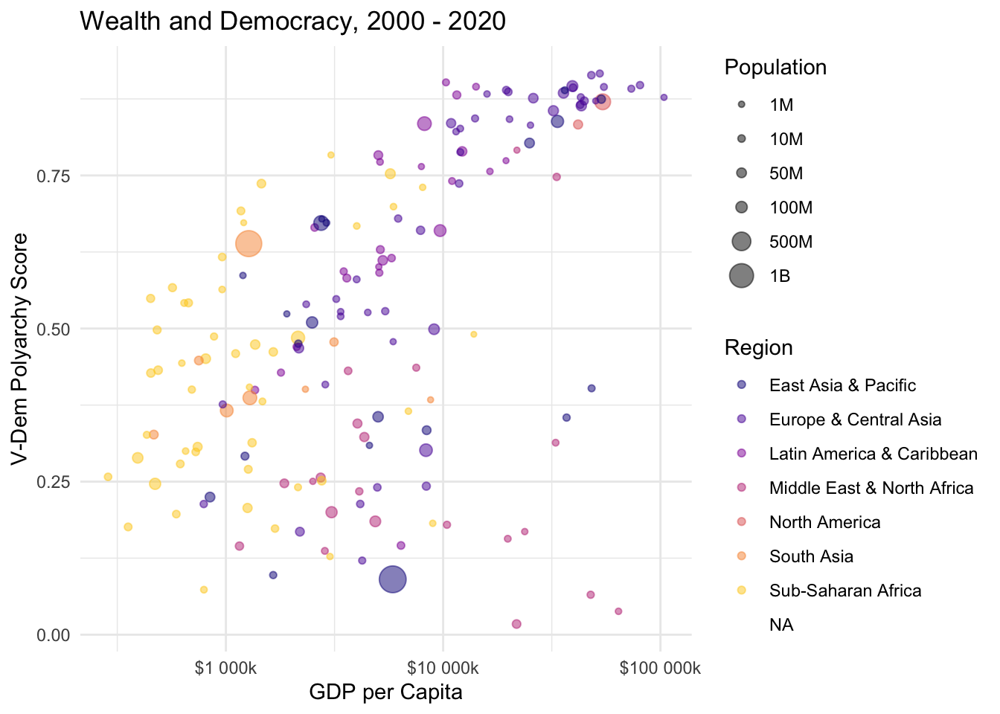

In this module, we will learn how to join data frames in R using the dplyr package. Joining data frames is a fundamental operation in data analysis, allowing you to combine information from different sources based on common keys. We will explore various types of joins, including inner joins, left joins, right joins, and full joins, and apply a left join to merge two real-world datasets.
Packages for API Data
As more organizations publish their data online, APIs—Application Programming Interfaces—have become a standard way to provide structured access to that information. Rather than downloading spreadsheets or scraping websites, we can use R code to request data directly from a server and receive it in a tidy format.
In R, a growing number of packages are designed specifically to help you access data from these APIs. These tools handle the technical details of connecting to the API and parsing the response, so you can focus on analysis. Packages like WDI and wbstats (for World Bank data), fredr (for U.S. Federal Reserve data), and tidycensus (for U.S. Census data) make it much easier to pull data into your workflow with just a few lines of code.
In this module, we will use the WDI package by Vincent Arel-Bundock to access data from the World Bank’s open data API. The package provides a streamlined interface to over 40 datasets published by the World Bank, including the World Development Indicators, Gender Statistics, Education Statistics, and more. These databases cover a wide range of topics such as health, labor, infrastructure, environment, and governance, with data available for nearly every country in the world. The package returns the data in a tidy format, making it easy to integrate into your analysis workflow.
The basic syntax for using the WDI package is as follows:
library(WDI)library(dplyr)wbdata<-WDI( indicator ="NY.GDP.PCAP.KD", # per capita GDP in constant US dollars country =c("USA", "CAN", "MEX"), # Countries to include start =2000, # Start year end =2020, # End year extra =TRUE# Include extra metadata (default is FALSE))glimpse(wbdata)
The country parameter takes either ISO aplha 2 or 3 codes which you can find here. Familiarize yourself with these codes a bit as they will become important when we want merge datasets based on them.
If you want to download multiple indicators at once, you can pass a vector of indicator codes to the indicator parameter. You can also rename variables as you select them. For example:
indicators<-c(gdp_pc ="NY.GDP.PCAP.KD", population ="SP.POP.TOTL")wbdata2<-WDI( indicator =indicators, # GDP and total pop country =c("USA", "CAN", "MEX"), start =2000, end =2020)glimpse(wbdata2)
There are two ways to find indicators to download with WDI. One is to use the built-in WDIsearch() function to search for indicators by keyword, like this:
WDIsearch('labor force participation')|>as_tibble()|># Convert to tibble for easier viewingslice(1:10)# Show first 10 results
# A tibble: 10 × 2
indicator name
<chr> <chr>
1 9.0.Labor.All Labor Force Participation Rate (%)
2 9.0.Labor.B40 Labor Force Participation Rate (%)-Bottom 40 Percent
3 9.0.Labor.T60 Labor Force Participation Rate (%)-Top 60 Percent
4 9.1.Labor.All Labor Force Participation Rate (%), Male
5 9.1.Labor.B40 Labor Force Participation Rate (%)-Bottom 40 Percent, Male
6 9.1.Labor.T60 Labor Force Participation Rate (%)-Top 60 Percent, Male
7 9.2.Labor.All Labor Force Participation Rate (%), Female
8 9.2.Labor.B40 Labor Force Participation Rate (%)-Bottom 40 Percent, Fema…
9 9.2.Labor.T60 Labor Force Participation Rate (%)-Top 60 Percent, Female
10 JI.TLF.ACTI.FE.ZS Labor force participation rate, aged 15-64, female (% of f…
# A tibble: 10 × 2
indicator name
<chr> <chr>
1 9.2.Labor.All Labor Force Participation Rate (%), Female
2 9.2.Labor.B40 Labor Force Participation Rate (%)-Bottom 40 Perce…
3 9.2.Labor.T60 Labor Force Participation Rate (%)-Top 60 Percent,…
4 JI.TLF.ACTI.FE.ZS Labor force participation rate, aged 15-64, female…
5 SL.TLF.ACTI.1524.FE.NE.ZS Labor force participation rate for ages 15-24, fem…
6 SL.TLF.ACTI.1524.FE.ZS Labor force participation rate for ages 15-24, fem…
7 SL.TLF.ACTI.FE.ZS Labor force participation rate, female (% of femal…
8 SL.TLF.CACT.2534.FE.ZS Labor participation rate, female (% of female popu…
9 SL.TLF.CACT.2554.FE.ZS Labor participation rate, female (% of female popu…
10 SL.TLF.CACT.3554.FE.ZS Labor participation rate, female (% of female popu…
Note
A regular expression (or regex) is a special pattern used to match text. In WDIsearch(), regular expressions let you search for indicators based on the presence and order of words. For example, the pattern “labor.*participation.*female” matches any indicator name that contains the word “labor,” followed by “participation,” and then “female,” with any characters in between. See this chapter of R for Data Science for more on regular expressions.
Note that here we are using the dplyrslice() function to limit the results to the first 10 rows. You can adjust this number as needed. The output will show you the indicator name, code, and description, which you can use in the WDI() function. We also convert the output to a tibble for easier viewing in a rendered Quarto document (but this is not necessary in a notebook or in the console).
The other way you can hunt for indicators is to browse the World Bank’s World Development Indicators database directly. Here you can go to the Series tab and simply search for the indicator you are interested in. Then click on the information icon to view the indicator’s code, which you can use in the WDI() function.
Use WDI() to download that variable for a country or set of countries.
Use WDI() to download multiple indicators at once.
Joining Datasets
Now let’s say that we want to download some data from the World Bank with WDI and now we want to merge it with another dataset. For example, we might want to analyze the relationship between some economic indicators like GDP and population, and some political indicators like democracy scores from the V-Dem dataset. To do this, we need to join the two datasets together based on a common key, which in this case is the country code.
When we talk about a join in data wrangling, we are usually referring to a horizontal merge—that is, combining two data frames side by side by matching rows based on shared values in one or more columns (like country and year). This is common when we have data from two different sources, such as World Bank and V-Dem, and we want to analyze them together.
In dplyr, the most common joins fall into two categories: mutating joins and filtering joins. Mutating joins are the ones you’ll use most often when combining datasets. There are four main types.
An inner join keeps only the rows that match in both datasets. If a country-year pair is missing in either dataset, it will be dropped from the result.

Source: R for HR
A full join keeps everything from both datasets. If a country-year pair exists in only one of them, you’ll still see it in the final data, with missing values (NA) filled in where needed.

Source: R for HR
A left join keeps all rows from the left dataset (typically the one you’re focusing your analysis on) and adds columns from the right dataset wherever there’s a match.
Source: R for HR
A right join is like a left join, but it keeps all rows from the right dataset and adds data from the left wherever possible.
Source: R for HR
Most of the time, we will use a left join because we want to keep the structure of one main dataset and supplement it with additional information. The syntax for a left join in dplyr is straightforward:
That brings us to our next point, which is that when we are joining datasets, it’s crucial to ensure that the columns you’re joining on have the same data type and format. For example, if one dataset uses ISO alpha-3 country codes (like “USA”) and another uses alpha-2 codes (like “US”), you’ll need to standardize them before joining.
In the context of cross-country analysis, the countrycode package (also authored by Vincent Arel-Bundock) is immensely helpful. It allows you to convert between different country code formats, such as ISO alpha-2, alpha-3, numeric codes, and even country names.
To convert country codes using the countrycode package, you can use mutate() along with the countrycode() function. Let’s try it with the wbdata dataset we created earlier:
library(countrycode)# Convert World Bank ISO alpha-2 codes to V-Dem alpha-3 codeswbdata_with_vdem_codes<-wbdata2|>mutate(vdem_country_code =countrycode( sourcevar =iso3c, origin ="wb", destination ="vdem"))|>relocate(vdem_country_code, .after =iso3c)glimpse(wbdata_with_vdem_codes)
Here we are adding a new column to our wbdata dataset called vdem_country_code, which contains the V-Dem alpha-3 codes corresponding to the ISO alpha-2 codes in the iso2c column. The first argument in the countrycode() function is the vector of country codes that we want to convert, the second is the source code type (in this case, World Bank style iso3c codes or “wb”), and the third is the target code type (in this case, “vdem”). We also use the dplyrrelocate() verb to move the new vdem_country_code column right after the original iso3c column for better organization.
Performing a Join
Now let’s put it all together and use our join skills to explore the relationship between democracy and development. First we will grab the GDP per capita and population for all of the countries for the years 2000 to 2020 from the World Bank using the WDI() function. Then we will summarize the data across this period by taking the mean GDP per capita and population for each country. And finally we will use the countrycode package to convert the World Bank country codes to V-Dem country codes so we can join it with the V-Dem democracy data (which we will download next).
indicators<-c( gdp_pc ="NY.GDP.PCAP.KD", population ="SP.POP.TOTL")wbdata_all_countries<-WDI( indicator =indicators, country ="all", # get data for all countries start =2000, end =2020, extra =TRUE# Include extra metadata)|>filter(region!="Aggregates")|># Exclude aggregate regionsgroup_by(iso3c, region)|># Group by countrysummarize( gdp_pc =mean(gdp_pc, na.rm =TRUE), population =mean(population, na.rm =TRUE))|>ungroup()|># Ungroup to remove grouping structuremutate(vdem_country_code =countrycode( sourcevar =iso3c, origin ="wb", destination ="vdem"))|>relocate(vdem_country_code, .after =iso3c)glimpse(wbdata_all_countries)
After summarizing by country and year, we use ungroup() to remove the grouping structure. This ensures that any subsequent operations—like mutate() or joins—aren’t accidentally performed within each group. It helps avoid unexpected behavior and keeps the data frame’s state clean for downstream analysis.
Note that when performing the merge we used a filter() to exclude aggregate regions like “World” or regional aggregates from the World Bank data. But even after doing this we will see that there are still some countries that do not have V-Dem codes. This is fine. It just meansthat V-Dem does not cover all countries, especially smaller ones or those with limited data availability. When we perform our left join, these will drop out. We could also load tidyr and use the drop_na() function to remove these rows, but we will leave them in for now.
Now let’s go ahead and fetch the V-Dem democracy scores for the same countries and years. We will use the fetchdem() function from the vdemlite package to get the V-Dem democracy scores, specifically the polyarchy score (v2x_polyarchy) and the fair elections score (v2xel_frefair). We will then rename these columns to make them more intuitive and then group and summarize the data so that we have one set of democracy scores per country.
library(vdemlite)# Fetch democracy scores for the same countries and years as wbdatademocracy_scores<-fetchdem( indicators =c("v2x_polyarchy", "v2xel_frefair"), start_year =2000, end_year =2020)|>rename( polyarchy =v2x_polyarchy, fair_elections =v2xel_frefair)|>group_by(country_id)|>summarize( polyarchy =mean(polyarchy, na.rm =TRUE), fair_elections =mean(fair_elections, na.rm =TRUE))glimpse(democracy_scores)
Now we can perform a left join to combine the two datasets based on the V-Dem country codes and the year. We will use the left_join() function from dplyr to do this. Let’s be sure to put the V-Dem data set as our left dataset, since we want to keep all of the V-Dem data and only add the World Bank data where it matches.
# Perform a left join to combine the datasetswb_democracy_data<-left_join(democracy_scores, wbdata_all_countries, by =c("country_id"="vdem_country_code"))glimpse(wb_democracy_data)
Notice here that while we had a common key for the country codes, the columns had different names. Therefore, we specified the by argument as a named vector, where we matched the vdem_country_code from the World Bank data to the country_code in the V-Dem data.
Now let’s have a little bit of fun and try a visualizing the relationship between GDP per capita and the V-Dem polyarchy score using ggplot2:
library(ggplot2)ggplot(wb_democracy_data, aes(x =gdp_pc, y =polyarchy, size =population, color =region))+geom_point(alpha =0.5)+scale_x_log10(labels =scales::label_number(prefix ="$", suffix ="k"))+scale_size_continuous(# options for customizing population legend name ="Population", breaks =c(1e6, 1e7, 5e7, 1e8, 5e8, 1e9), labels =c("1M", "10M", "50M", "100M", "500M", "1B"))+labs( title ="Wealth and Democracy, 2000 - 2020", x ="GDP per Capita", y ="V-Dem Polyarchy Score", color ="Region")+theme_minimal()+scale_colour_viridis_d(option ="plasma", end =0.9)

Your Turn!!
Use the WDI() function to download a set of economic indicators for a country or set of countries.
Use the countrycode package to convert the country codes in your World Bank data to V-Dem codes.
Use the fetchdem() function to download V-Dem democracy scores for the same countries and years as your World Bank data.
Use left_join() to merge the two datasets based on the V-Dem country codes and year.
Visualize the relationship between one of your economic indicators and a V-Dem democracy score using ggplot2.